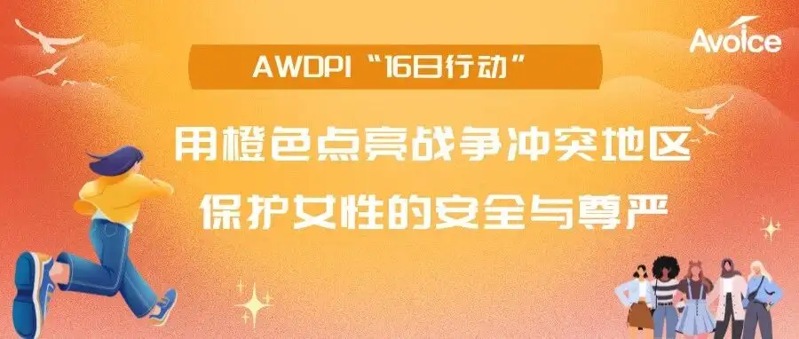
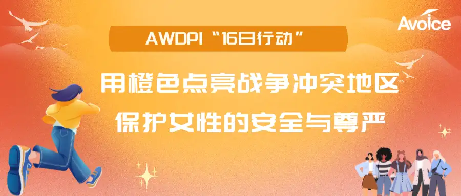
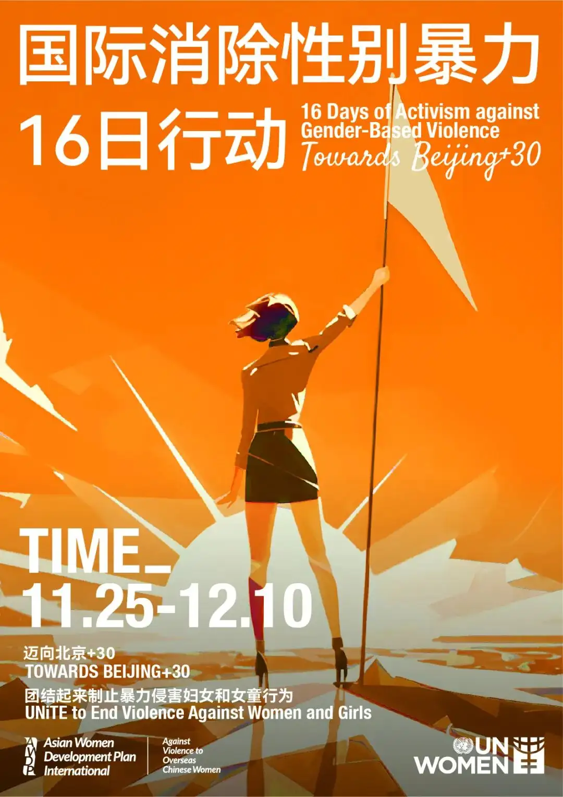

每年的11月25日是“制止暴力侵害妇女行为国际日” ，联合国发起的“16日行动”从这一天开始，持续到12月10日“国际人权日”结束，旨在倡导全球对性别暴力问题的关注，呼吁各国政府部门、民间组织、新闻媒体、企业、公众联合起来，共同采取实际行动，消除针对女性的暴力。

2025年是《北京宣言》和《行动纲领》通过30周年，也是第四次世界妇女大会召开30周年，因此，今年的“16日行动”以 “迈向北京+30：团结起来制止暴力侵害妇女和女童行为”为主题，动员社会各界围绕《北京宣言》和《行动纲领》的30周年回顾，强化性别暴力问责制，为消除性别暴力提供必要的资源和支持。
今年，在这一重要的行动中，我们不仅要关注普遍存在的针对女性的暴力行为，更应特别关注在巴以冲突中女性权益所遭受的严重侵害。
战争和冲突往往使女性成为最脆弱的群体，她们在暴力、性别歧视和人权侵犯中承受着沉重的代价。 巴以冲突中的女性面临着生存、尊严和基本人权的严重威胁，她们的声音亟待被倾听，她们的困境急需被援助。
橙色作为“16日行动”的主题色，象征着对性别暴力的警惕与关注，同时也传递出希望与勇气。
期待在“16日行动”中，橙色照亮每一个角落，照亮在战争冲突地区长期遭受伤害的妇女，激励更多人参与到“16日行动”中，保护她们的权益与尊严。
“16日行动”不仅是一个时间段，更是一场全球性的呼声。
让我们共同努力，推动社会变革，创造一个远离战争、远离暴力、充满希望的未来。
每一个人都可以成为改变的推动者，每一个人都可以行动起来，为女性的安全与平等奋斗，为世界的安全与平等奋斗！
排版 | 付雨轩